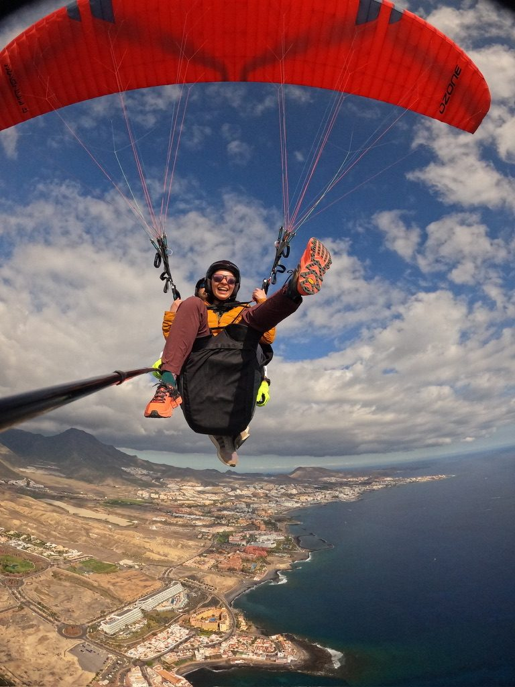
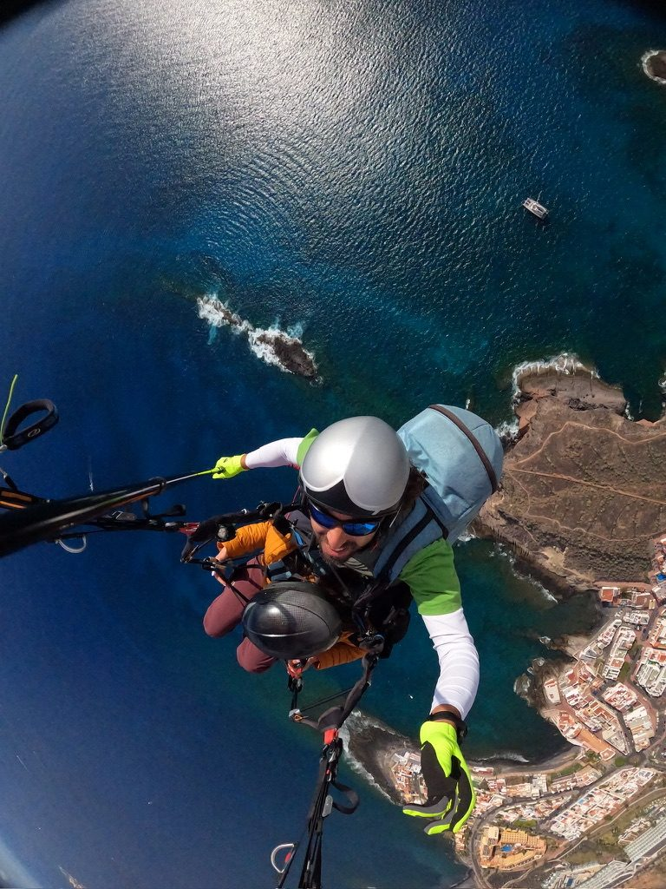
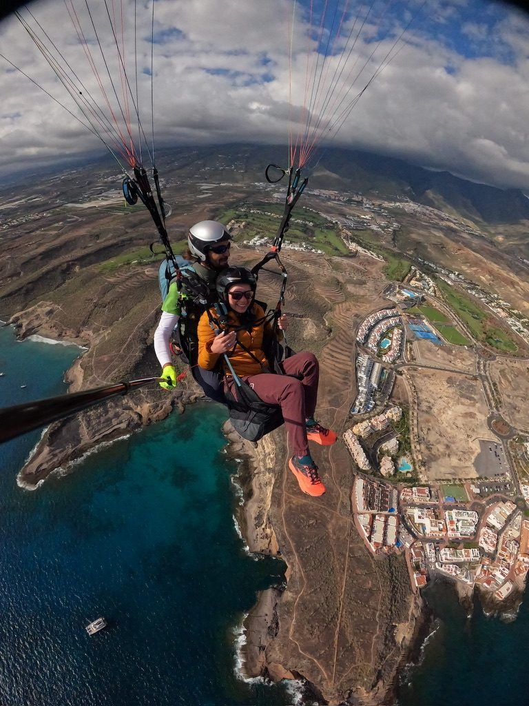
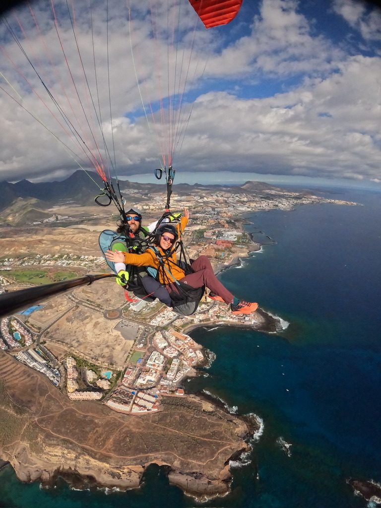

I have been offered paragliding several times in different countries and said no each time. Not because I'm afraid of heights — I'm genuinely fine with heights — but because running off a cliff attached to a very large kite operated by a person you met forty minutes ago requires a particular combination of trust and momentum that I wasn't always ready to assemble on short notice. In Tenerife, the combination came together.
The decision
The paragliding launch point above Adeje gives you a long time to think about your decision, which is either helpful or very unhelpful depending on who you are. You stand at the edge of a cliff. You look at the coast far below, the Atlantic beyond it, El Teide behind you. The pilot clips you in, gives instructions, explains that the key thing is to run and not to look down at the edge. You look down at the edge anyway. You run anyway.

At the launch point. The moment before. Everything looks very far down from here.
The moment the ground leaves your feet is unlike anything with a motor. It's instant quiet — no engine, no mechanical anything, just air and the sound of the wing above you. You go up before you go forward. The thermal catches you and for a moment you're climbing without effort, which is a completely new sensation and one I'd recommend to anyone who hasn't felt it.

Airborne. The coast below. The quiet up here is something nobody tells you about.
Tenerife from up here
From the air, Tenerife rearranges itself. The roads you drove disappear. The scale of the island becomes obvious in a way it isn't from ground level — the dramatic drop from the mountains to the coast, the way the volcanic terrain turns to beach in a matter of kilometres, the ocean going in all directions. You see the whole thing at once and it makes sense in a way it doesn't when you're inside it.

Tenerife from above. All of it at once. Worth every moment of the decision-making on the cliff.
My pilot was calm and informative and clearly someone who has watched many people encounter this view for the first time. He pointed things out — the banana plantations below, the angle of El Teide, the specific thermal we were riding. He was good at this in the way that people who do something genuinely well are good at it: he made the complex look easy and made the easy feel significant.
The landing
The landing is in a field near the coast, which you approach slowly and with legs dangling, which is a strange way to arrive somewhere but not an unpleasant one. You touch down running, which requires a slightly undignified burst of speed in a harness, and then you're standing on the ground again and everything seems very flat and very ordinary for a moment before the ordinary is fine again.

Landed. Still processing. The coast behind us looking entirely different from when we left it from above.
I stood in that field for a while after, just looking up. The sky looked different from having just been inside it. That's what all the good things do — they change the shape of what comes after.
Paragliding is covered — if your policy says so.
World Nomads travel insurance policies offer coverage for more than 150 activities, including paragliding. Get a quote, make a claim, or buy or extend your policy while on the road.
Get a Quote from World NomadsThis is an affiliate link — if you book through it, I may earn a small commission at no extra cost to you.